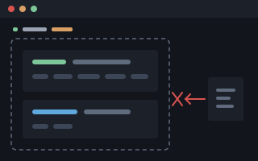
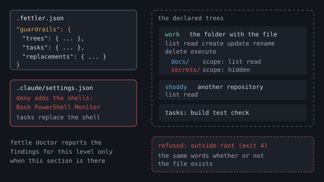

Shoddy · Fettler
The second level. You name the folders, say what may be done in each, and close every other way to the disk.
This page describes the guardrails level, which is off until a .fettler.json has a guardrails section. At the tools level, the launch folder is the tree and the client's own file tools still work beside Fettler. A guardrails section replaces the launch folder with the trees you declare. fettle setup guardrails then denies the client's built-in file, shell and output tools, so Fettler is the only route to a file.
An assistant given guardrails cannot wander, because everything outside the trees is refused. Every path it touches must sit inside a tree, a folder you named ahead of time. Outside those trees it may not write, read, list, or even learn that a file exists. There is no current folder to change, no path that climbs out of a tree, and no shell to go round it. So the assistant cannot open a sibling project, an old copy or your home folder, read the wrong thing, and answer from it.

fettledeclared trees · no shell
guardrails section declares the trees, what each allows, its scopes and its tasks. The client's deny list gains the shells, Bash, PowerShell and Monitor, on top of the file tools that setup tools denied. A declared task is the only way to a shell, and fettle stays the only route to a file. A path outside every tree is refused.These two drawings show one machine with guardrails on. The first is the disk: the folders a developer has, which ones the assistant may enter, and every way off the machine. The second is the mechanism that holds that arrangement in place. The first answers what the assistant can reach, and the second answers how that is enforced.
No command produced this arrangement. A person wrote every line of it into two short files at the top of the project. They are a checked-in .fettler.json and an uncommitted .fettler.local.json beside it. Both are printed in full under the map, so you can trace every block to the line that put it there.
![A map of a developer's disk and the network beyond it. The machine is one hatched area meaning out of bounds by default. On the left, the code folder holds a sibling project that is out of bounds, a planning repository that grants nothing at its root but opens two folders by name while keeping two others invisible, and the shoddy project which is fully in bounds apart from a sealed pocket holding its own configuration files. On the right, the user's folder holds one permitted scratch directory and several refused ones: keys and credentials, Documents which contains a Dropbox folder, browser profiles, and the operating system. Below the machine is the network: two sanctioned exits lead from the shoddy project to github.com and nuget.org, every other address has no route, and the Dropbox folder has its own continuous sync door to dropbox.com that no task opens and nothing here can close.](media/disk-map.svg)
requirements\completed is invisible while the folder beside it is writable. The files that define the boundary are sealed inside the tree that grants everything else. The two network exits open from one place only, because it is the one place allowed to run anything. Then there is Dropbox, a way off the machine that no task opens and nothing here can close. Leaving that folder dark shuts a route that would go round every other line on the map.Here is what drew it. Read these two files beside the map. Every lit block above is a line below, and every dark block is dark because no line mentions it.
// .fettler.json - checked in, travels with the project
{
"guardrails": {
"trees": {
"work": {
"path": ".",
"can": ["list", "read", "create", "update", "rename", "delete", "execute"]
}
},
"tasks": {
"build": { "run": "pwsh -File build.ps1 build", "cwd": "." },
"test": { "run": "pwsh -File build.ps1 test", "cwd": "." },
"feature": { "run": "pwsh -File scripts/shoddy-branch.ps1 feature hebdenbridge", "cwd": "." },
"ship": { "run": "pwsh -File scripts/shoddy-branch.ps1 ship -Yes", "cwd": "." }
}
}
}// .fettler.local.json - not checked in; this machine's own trees
{
"guardrails": {
"trees": {
"requirements": {
"path": "../shoddy-planning/requirements",
"can": [],
"scopes": {
"backlog": { "can": ["list", "read", "create", "update", "rename"] },
"inprogress": { "can": ["list", "read", "create", "update", "rename"] },
"cancelled": { "can": [] },
"completed": { "can": [] }
}
}
}
}
}The table matches the map to the files. It includes the three things on the map that no line in either file could have put there.
| On the map | What says so |
|---|---|
c:\github\shoddy, and the two exits below it | The work tree. It is the only tree whose can list ends in execute, so it is the only place on the machine where a task may run. |
github.com and nuget.org, and no other address | The four declared tasks. Two of them run git, and two restore packages. Nothing names a third host, so there is no third route. |
| The scratch folder is writable, but nothing may run there | No line. fettle finds this session's scratch folder itself and opens it at every level, and it never grants execute there. |
shoddy-planning grants nothing at its top | The empty can list on the requirements tree. |
backlog and inprogress are writable, yet nothing there can be deleted | The can lists on those two scopes, which leave out delete. |
completed and cancelled are sealed, and not even listed | The empty can list on each. A scope replaces what its tree grants rather than adding to it, so an empty one grants nothing. |
shoddy-devilsdust, Documents, .ssh, AppData\Roaming, and the rest of C:\ | No line at all. Out of bounds is the default. These two files list the exceptions, and whatever they leave out stays dark. |
The sealed pocket inside shoddy | No line, and no line could. The nine governed files are refused by every write at every permission level. What every call checks lists them. |
Dropbox copying files out to dropbox.com | Neither file's doing. That route belongs to another program, which is why the folder it watches is one of the ones left dark. |
Here is how it is held. The next drawing shows the same arrangement as three boundaries. They are what the assistant is, the one program between it and the disk, and the disk as the declared trees present it.
![Component diagram of three boundaries. First, the model, Claude in VS Code, whose eleven built-in tools are every one of them struck through as denied: the six file tools Read, Write, Edit, NotebookEdit, Grep and Glob; then the three shells Bash, PowerShell and Monitor; and last the two output readers BashOutput and TaskOutput, which hand back the output of work already done. Second, the Fettler MCP server, whose boundary comes from .fettler.json and which refuses to write the files that govern it or the model. Third, the filesystem, visible only as the declared trees, with everything else refused as nonexistent.](media/workstation.svg)
Monitor tool counts as a shell, because it runs the command it is given in the same way Bash does. The two output readers start nothing, but they hand back the output of work already done, and that output never passes the tree check or the screen. The server takes its trees from .fettler.json and refuses to write any file that governs it or the model. Full screen shows the drawing at reading size.Read does not deny mcp__fettler__read..fettler.json, and no tool takes a root or a configuration file as an argument. The files that govern the tool and the model are refused by every write. That is the rule that makes every other rule hold.Write the guardrails section yourself, before you run anything. fettle setup guardrails writes a starter section when the file has none, but it declares only the launch folder as work. A file nobody read is still the boundary you are running under. Each step below needs the one before it.
# 1. write a "guardrails" section in .fettler.json <- your trees; nothing below writes them
# 2. add your machine's own trees to .fettler.local.json <- not checked in
# 3. add "tasks" if anything needs running
fettle doctor # what is wired, and what goes round it
fettle setup guardrails claude-code --local --dry-run # what would change
fettle setup guardrails claude-code --local --hooks # change it
fettle doctor # confirm, and see what is left by handRun doctor again at the end. setup clears each finding whose fix is to add something. A finding whose fix is to remove something, such as 2.6, 2.7, 2.11, 2.14 or B.17, is still there afterwards. You remove those entries yourself, in an editor.
A tree is a name, a path, and a list of what may be done there. You may declare more than one, and a folder of code plus a sibling folder is the ordinary case. Put them under trees in the guardrails section of .fettler.json, at the top of the project, and check the file in.
{
"guardrails": {
"trees": {
"work": { "path": "." }
}
}
}That is the smallest useful section. Here is a fuller one, with a second tree kept read-only and one folder inside it hidden:
{
"guardrails": {
"trees": {
"work": { "path": "." },
"requirements": {
"path": "../shoddy-requirements",
"can": ["list", "read"],
"scopes": {
"backlog": { "can": ["list", "read", "create", "update", "rename"] },
"backlog/cancelled": { "can": [] }
}
}
}
}
}The defaults are the narrow ones, and only the file can widen them. The reference gives the full rules.
| Tree | When can is left out, it grants |
|---|---|
| The tree holding the file | list read create update rename delete, which is everything but execute |
| Every other tree | list read, so you can look but not change |
Any tree, for execute | Nothing, so you must name execute in the list, because it is never a default |
scratch, tool-results or memory. fettle gives those names to the client's folders, which it opens at every level.A scope states permissions for one folder inside a tree, and it replaces what the tree grants. It does not add to the tree. A scope naming create and nothing else grants create and nothing else, not even read. Saying it at a depth has the rules for scopes inside scopes.
A scope with an empty can list is hidden. find and search do not show it, and a path into it is refused in the same words as a path outside every tree. In the example above, backlog may be reorganised but never deleted, and backlog/cancelled does not exist for the assistant.
On the left is a whole guardrails file, and on the right is what roots says with it in place. Notice that the guardrails line now names the file. The work tree grants execute because the file says so, and the shoddy tree is read-only by default.
// C:\github\app\.fettler.json
{
"guardrails": {
"trees": {
"work": {
"path": ".",
"can": ["list", "read", "create",
"update", "rename", "delete",
"execute"],
"scopes": {
"secrets": { "can": [] }
}
},
"shoddy": { "path": "../shoddy" }
},
"tasks": {
"build": {
"run": "pwsh -NoProfile -File app-build.ps1",
"cwd": "."
}
}
}
}$ fettle roots
levels
tools on, always
guardrails on, from C:\github\app\.fettler.json
screenings off
trees
work C:\github\app (default)
can: list read create update rename delete execute
branch: main (local)
secrets can: nothing
shoddy C:\github\shoddy
can: list read
branch: main (local)
found by fettle
scratch C:\Users\you\AppData\Local\Temp\claude\...\scratchpad
...
tool-results C:\Users\you\.claude\projects\c--github-app\...\tool-results
...
memory C:\Users\you\.claude\projects\c--github-app\memory
...
declared by C:\github\app\.fettler.jsonThe folders fettle found are still there. Guardrails replace the launch folder with your trees, and they leave the client's folders open. The client's folders describes each one.
An uncommitted .fettler.local.json beside the project file is merged over it. Your machine's own trees go there, so they never appear in anybody else's checkout. Keep it out of source control.
A changed file applies on the next call. The server re-reads the file it found before every call, so you do not restart anything. The server still cannot widen its own boundary, because it refuses to write that file.
Declare a task only if something in this project needs running. run starts only what the file declares, and it never builds a shell command. It also needs the tree to grant execute, which is never a default.
{
"guardrails": {
"trees": {
"work": { "path": ".", "can": ["list", "read", "create", "update", "rename", "delete", "execute"] }
},
"replacements": {
"feature-branch": "hebdenbridge"
},
"tasks": {
"build": { "run": "pwsh -File shoddy-build.ps1" },
"gate": { "run": "node scripts/gate/driver.mjs gate --resume", "cwd": "." },
"sign": { "run": "signtool sign /f \"C:\\keys\\my cert.pfx\" bin/app.exe" },
"feature": { "run": "pwsh -File scripts/shoddy-feature.ps1 new {feature-branch}" }
}
}
}pwsh on a machine that has only Windows PowerShell fails when it starts, not when you declare it.replacements. Today's branch name is a fresh string each time, so it cannot be a second task. Declare its name once, write it in braces on the command line, and keep the value in the overlay. Values the file supplies has the rules.cwd is optional. It is the folder the task runs in. It defaults to the top of the default tree, and it must sit inside a tree like any other path.shoddy-build.ps1 rather than build.ps1, and a checkin task rather than commit. The client's own permission check reads these names, and it can refuse a task named with a bare git word as if it were that git command.fettle setup guardrails <client> | --all [--local | --global] [--hooks] [--deny] [--dry-run] [--force] [--command PATH]
clients: claude-code · claude-desktop · vscode-copilot · github-copilotThe level is the first word. fettle setup tools writes the registration, the deny list for the client's own file tools, and the tools paragraph of the instruction block, and installing it covers that. fettle setup guardrails adds what this page describes and never registers. The old spelling, fettle setup claude-code, is refused, and the message shows the new spellings.
| It writes | Where, and when |
|---|---|
| The shell denies | Bash, PowerShell and Monitor, added to the deny list in the client's settings that setup tools wrote. Any tools-level deny that is missing is written too. At --local it is written. At --global it is only offered, unless you add --deny. |
| The guardrails paragraph | In the client's instruction file, such as CLAUDE.md, after the tools paragraph that setup tools wrote. The instruction block shows it. |
| The session hook | Only with --hooks, for Claude Code. It runs doctor at the start of each session. |
A starter guardrails section | Only at --local, and only when the project file has none. It declares the launch folder as work, and it never changes a section that exists. |
The deny list names the client's built-in tools that could reach a file without Fettler. It lives in the client's settings, such as .claude/settings.json. The two levels write it between them. setup tools denies the file tools and the output readers, because registering alone leaves the assistant using its own tools out of habit. setup guardrails adds the shells, because a declared task is what replaces a shell. Setup writes it at --local, and it never writes settings.local.json, because that file is somebody's own and is not committed. Here is the whole list for Claude Code, in the order the two levels write it:
{
"permissions": {
"deny": ["Read", "Write", "Edit", "NotebookEdit", "Grep", "Glob",
"BashOutput", "TaskOutput",
"Bash", "PowerShell", "Monitor"]
}
}| Group | Tools | Written by | Why they are denied |
|---|---|---|---|
| The file tools | Read, Write, Edit, NotebookEdit, Grep, Glob | setup tools | Fettler replaces each one. The list is short and closed, and it is the same on every platform. |
| The output readers | BashOutput, TaskOutput | setup tools | They start nothing and write nothing. But they hand back the output of work already done, and that output never passes the tree check, the credential check or the screen. |
| The shells | Bash, PowerShell, Monitor | setup guardrails | A shell is a complete route round the trees. Monitor counts as a shell, because it runs the command it is given in the same environment as Bash. A declared task is what replaces a shell, so the deny waits for the level that declares tasks. |
Read does not deny mcp__fettler__read. So the deny sends the assistant to Fettler rather than leaving it with no tools.doctor prints the date it was last checked against a real client. Finding 2.18 reports any tool a settings file names that this fettle does not know.No list of writing commands can close a shell, so the shell itself is denied. echo x > file turns any command into one that writes a file. python -c does the same, and so does a redirect on any command at all. A list of forbidden commands could never be finished.
Denying the three shell names is short and closed, like denying the six file tools. What cannot be finished is the list of commands behind them, and that is the allow list's job. Deny the shell, then allow back the few commands this project needs:
{
"permissions": {
"allow": ["Bash(git status:*)", "Bash(git diff:*)"],
"deny": ["Read", "Write", "Edit", "NotebookEdit", "Grep", "Glob",
"BashOutput", "TaskOutput",
"Bash", "PowerShell", "Monitor"]
}
}execute.Bash(rm:*) or PowerShell(Set-Content:*) runs without a prompt, and it is a complete route round the trees. doctor reports each one as 2.6.Whether a deny beats an allow is the client's decision, and fettle cannot see it. fettle is a separate program, so it cannot watch how another program resolves its rules. So doctor reports the conflict, as B.17, and names the fix that is right either way: remove the allow entry.
allow: Bash(git status:*) with deny: Bash is the shape the section above asks for, so B.17 leaves it alone.Read(//c/work/**) beside a denied Read is reported, because reading is what Fettler does. doctor reports an allow on a replaced tool as 2.7.The instruction block tells the assistant how to work here, and the deny list makes it so. setup tools writes the block into the client's instruction file, such as CLAUDE.md, between markers it can find again. The block holds the tools paragraph, which says to call roots first, that there is no working folder, and that every answer stops at 40,000 bytes. setup guardrails adds the guardrails paragraph after it, as written:
**Guardrails are on.** The built-in Read, Write, Edit, NotebookEdit, Grep and
Glob are denied. Use the Fettler tools for every file operation.
**A tree may be read-only.** A scope inside a tree may allow more or less
than the tree does. Running a declared task needs `execute`, which is never
a default.
`.fettler.json` and `.fettler.local.json` say what Fettler may do. Fettler
does not write them. A person edits them.Running setup again rewrites the block between its markers and changes nothing else in the file. CLAUDE.md is not a governed file, because it persuades rather than permits, and an assistant keeping a project's instructions up to date is ordinary work.
The session hook runs fettle doctor --hook each time a session starts. It is for Claude Code only, and you ask for it with --hooks. When nothing is wrong it prints nothing. When something is wrong, it prints the broken or missing registrations and the serious findings, then the line run: fettle doctor.
--command names another.The entry it adds to the client's settings file:
{
"hooks": {
"SessionStart": [
{ "hooks": [
{ "type": "command", "command": "\"C:\\tools\\fettle\\fettle.exe\" doctor --hook", "timeout": 10 }
] }
]
}
}| Flag | What it does |
|---|---|
<client> | One of claude-code, claude-desktop, vscode-copilot or github-copilot. |
--all | Every client this machine has. A client that is not installed is skipped, not created. |
--local | This project's files, which you can review in source control. The shell denies are written here, because asking for guardrails in a project is asking for its tasks to be the only way to a shell. |
--global | The files that apply to every project on the machine. It declares no tree, and it only offers the deny list. |
--deny | Writes the deny list at --global too. It is a separate flag, because changing how the assistant works in every project should never be a side effect. |
--hooks | Adds the session hook that runs doctor, for Claude Code only. It is added once, however often you run setup. |
--command PATH | Names the path to fettle that the hook runs. Without it, the hook names the fettle you ran setup with. |
--dry-run | Prints the same report and writes nothing, so run this first. |
--force | Replaces an existing entry that says something different, rather than leaving it alone. |
<file>.fettler-backup before its first write.allow entry is your own configuration, and removing it changes how you work. Setup names the entries that conflict and leaves them.--force, so setup never quietly reshapes somebody else's choice.doctor reports one section per level, and it reports findings only for a level that is on. A finding is a way round the boundary, with a number and the fix that clears it. At the tools level its section shows the registrations, the client's folders and any companions. With guardrails on, it adds the guardrails section below. It never writes anything, and it never prints a secret.
$ fettle doctor
fettle 2.2.0 C:\tools\fettle\fettle.exe
on PATH: C:\tools\fettle\fettle.exe
tools on, always
claude-code global healthy registered; runs C:\tools\fettle\fettle.exe
C:\Users\you\.claude.json
claude-code repo absent 'fettler' is not registered in this file
C:\github\app\.mcp.json
scratch: C:\Users\you\AppData\Local\Temp\claude\c--github-app\...\scratchpad
- 2.8 deny does not list the built-in Read, Write, Edit, NotebookEdit, Grep, Glob, BashOutput, TaskOutput. Run: fettle setup tools claude-code --local
C:\github\app\.claude\settings.json
guardrails on, from C:\github\app\.fettler.json
tool inventory dated 2026-08-20; newer client tools are not checked
- 2.20 deny does not list the shell Bash, PowerShell, Monitor. Run: fettle setup guardrails claude-code --local
C:\github\app\.claude\settings.json
- 2.17 1 other MCP server registered: sparky. Deny mcp__<name>__* for any that should not reach files
C:\Users\you\.claude.json
screenings offExit 0 means healthy, 1 means warnings, and 2 means broken. A broken registration and finding 2.19 are the two things that give exit 2. ! marks a serious finding, and - marks one worth knowing. Everything doctor can report gives a row for each finding, with the edit that clears it.
| Finding | What it reports |
|---|---|
2.6 ! | An allow entry pre-approves a shell command that writes files. |
2.7 ! | An allow entry grants a built-in tool that Fettler replaces. |
2.9 - | The client's extra folders setting names a folder outside every tree. |
2.10 - | An instruction file does not mention Fettler. |
2.13 - | settings.local.json is present. Its permissions are not committed. |
2.14 ! | VS Code's setting that approves every tool call without asking is on. |
2.16 - | A task fills a declared value into a string that a shell reads. |
2.17 - | Other MCP servers are registered. The deny list does not cover their tools. |
2.18 - | A policy file names a tool this fettle does not know. |
2.19 ! | A companion's folder is inside a declared tree, a screened tree, or a folder that holds a governed file. This gives exit 2. |
2.20 - | The deny list does not name a shell. fettle setup guardrails CLIENT --local clears it. |
B.17 ! | One rule appears in both the allow list and the deny list. |
Two findings belong to the tools level and are reported there: 2.8, a deny list that does not name a built-in file tool or output reader, which fettle setup tools CLIENT --local clears, and 2.11, two spellings of one project folder. Finding 2.15 is retired, and its number is not reused, because fettle now opens the scratch folder itself.
2.8 and 2.20 judge the deny list the way the client merges its files. A deny in the global settings holds in every project, and a deny in .claude/settings.json holds whatever .claude/settings.local.json says. So a tool counts as missing only when no settings file of that client denies it. Each finding names .claude/settings.json, which is the file setup writes at --local, and the command that clears it: setup tools for 2.8, setup guardrails for 2.20.
A companion reads and writes every file under its folder, with none of Fettler's rules. With guardrails off, that is one line of fact. With guardrails on, doctor reports 2.19 as serious when the companion's folder sits in any of these places:
The fix is to move the companion's folder outside every tree. Change the --root in its registration. Do not deny the companion, because that would remove the thing it is for.
| Verdict | Means | Exit |
|---|---|---|
n/a | The client is not installed, or has nothing at this reach. Claude Desktop has no project files, so its project row always says this. | never a failure |
absent | The client is installed, and fettle is not registered with it. | warning |
broken | The registration is wrong. The command does not start, or the file is not valid JSON. | failure |
healthy | The registration is there, and the command it names starts. | none |
Prove the boundary holds. Do not trust that it does. Correct wiring and a boundary that holds are two different claims, and only the second one matters. Ask the assistant to do each of these, and watch what comes back.
| Ask the assistant to… | What a correct setup does |
|---|---|
| list the tools it has | The Fettler tools appear, and doctor is among them. |
| ask for the roots | The levels come first, with guardrails on. Then the trees come back with what may be done in each, and they are the trees you declared. |
| read a file | The assistant uses the Fettler tool, and the answer carries an encoding, a line ending and a hash. |
read /etc/passwd or C:\Windows\win.ini | Refused as outside every declared tree, exit 4, in the same words whether or not the file is there. |
| read a file in an older session's folder | Refused in the same words, because only this session's folder is a tree. |
write .fettler.json | Refused as governed, exit 11, whatever the tree grants. |
write .claude/settings.json | Refused as governed too. A model does not edit the file that names the tools it may call. |
| write a file that holds a cloud access key or a private key | Refused as credential, exit 12, naming the line and the detector but never the secret. |
run a task in a tree with no execute | The run is refused with exit 8, and the refusal names the missing grant. |
| edit a file with the built-in editor | Refused by the deny list, and the assistant reaches for Fettler instead. |
| stage a draft in its scratch folder | It writes, because fettle opened that folder itself. If this fails, run roots and read the found: line for scratch. |